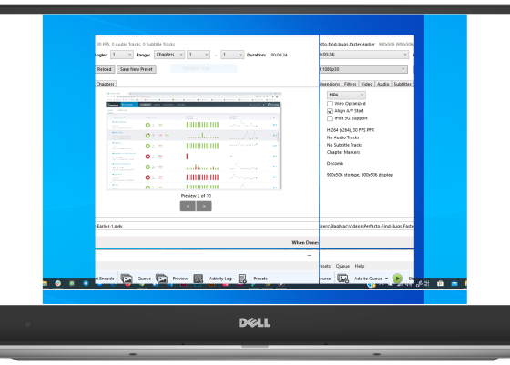

Handbrake
The open source video transcoder
HandBrake is a tool for converting video from nearly any
format to a selection of modern, widely supported codecs

Convert video from nearly
any format
Free and Open Source
video converter
Multi-Platform desktop
application
Just a few reason you
will love HandBrake

Optimised for easy use
Built-in Device Presets
Get started with HandBrake in seconds by
choosing a profile optimised for your device, or
choose a universal profile for standard or high
quality conversions. Simple, easy, fast. For those
that want more choice, tweak many basic and
advanced options to improve your encodes.
Modern video formats
Supported Input Sources
Handbrake can process most common multimedia
files and any DVD or BluRay sources that do not
contain any kind of copy protection.
Output
 File Containers: .MP4(.M4V) and .MKV
File Containers: .MP4(.M4V) and .MKV- Video Encoders: H.265 (x265 and QuickSync),
H.264(x264 and QuickSync), H.265 MPEG-4 and
MPEG-2, VP8, VP9 and Theora - Audio Encoders: AAC / HE-AAC, MP3, Flac, AC3, or
Vorbis - Audio Pass-thru: AC-3, E-AC3, DTS, DTS-HD, TrueHD,
AAC and MP3 tracks


With you in mind
Even more features for you
- Title / chapter and range selection
- Batch Scan and Queueing of encodes
- Live Static and Video Preview
- Support for VFR and CFR
- Chapter Markers
- Subtitles (VobSub, Closed Captions CEA-608,
SSA, SRT) - Constant Quality or Average Bitrate
Video Encoding - Video Filters: Deinterlacing, Decomb,
Denoise, Detelecine, Deblock, Grayscale,
Cropping and scaling